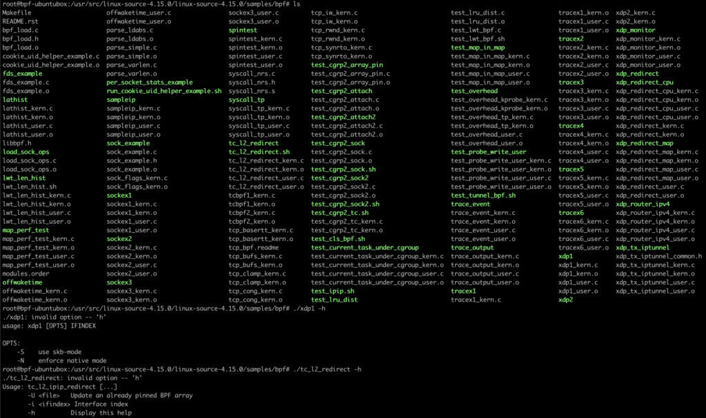

TL;DR
声明：下文提到的bpf/BPF字样是泛指，包括cBPF和eBPF。
通过文章，你能了解Linux内核代码中关于bpf程序的编译运行机制，并能学会如何基于Linux内核bpf示例环境编写你自己的bpf程序。文章涉及的实验环境和代码可以到这个git repo获取： https://github.com/nevermosby/linux-bpf-learning
最近Kubecon 2020 China上已经有了3个关于bpf的中文分享（来自腾讯和PingCAP），也看到国内第一梯队公司越来越关心bpf这项新技术，欢迎大家都能加入bpf学习队伍。
内核源码里的BPF示例代码概述
示例代码里基本是kern和user成对出现，也就是对于一个示例来说，分别提供了在内核空间运行的和用户空间运行的程序，绝对是良心之作了。
下载Linux内核源代码
First thing first，第一步是下载内核代码。
选择内核版本
目前社区维护的内核版本繁多，你需要确定下载哪个版本的代码。个人建议是下载与你的操作系统运行一致的内核版本，避免后续编译时出现不兼容问题。
选择下载渠道
代码下载渠道也很多： 1. 通过Linux社区官方仓库下载。以下几个网站都是官方维护的： - https://github.com/torvalds/linux - https://git.kernel.org/pub/scm/linux/kernel/git/torvalds/linux.git 观察下来，只要有新的commit，基本是实时同步的，下载最新版本的内核代码肯定没问题。如果你跟我一样，需要相对较旧的版本，只要切换相关的目标tag即可。我的内核版本是v4.15.0，下载地址参考如下： - https://github.com/torvalds/linux/tree/v4.15 - https://git.kernel.org/pub/scm/linux/kernel/git/torvalds/linux.git/tag/?h=v4.15 2. 通过Ubuntu apt仓库下载。Ubuntu官方自己维护了每个操作系统版本的背后的Linux内核代码，可以通过以下两种apt命令方式获取相关代码：
```bash
# 第一种方式
# 先搜索
> apt-cache search linux-source
linux-source - Linux kernel source with Ubuntu patches
linux-source-4.15.0 - Linux kernel source for version 4.15.0 with Ubuntu patches
linux-source-4.18.0 - Linux kernel source for version 4.18.0 with Ubuntu patches
linux-source-5.0.0 - Linux kernel source for version 5.0.0 with Ubuntu patches
linux-source-5.3.0 - Linux kernel source for version 5.3.0 with Ubuntu patches
# 再安装
> apt install linux-source-4.15.0
# 第二种方式
> apt-get source linux
Reading package lists... Done
NOTICE: 'linux' packaging is maintained in the 'Git' version control system at:
git://git.launchpad.net/~ubuntu-kernel/ubuntu/+source/linux/+git/bionic
Please use:
git clone git://git.launchpad.net/~ubuntu-kernel/ubuntu/+source/linux/+git/bionic
to retrieve the latest (possibly unreleased) updates to the package.
Need to get 167 MB of source archives.
Get:2 https://mirrors.ustc.edu.cn/ubuntu bionic-updates/main linux 4.15.0-99.100 (tar) [158 MB]
......
# 以上两种方式，内核源代码均下载至/usr/src/目录下
```
下载完成后，BPF示例就在源码根目录/samples/bpf目录下，可以到这里看个在线版的，建议大家通读一遍这个目录下的README.rst，了解整体步骤。
编译BPF示例代码
安装编译所依赖的工具
在真正开始编译工作之前，请确保你的实验环境已经安装clang和llvm：
- clang >= version 3.4.0
- llvm >= version 3.7.1
正式编译示例代码
万事俱备了，可以正式开始编译工作。我们说的“编译”其本质就是利用内核目录下不同的Makefile，通过特定的make指令完成特定工作。来，先上命令：
# 切换到内核源代码根目录
cd linux_sourcecode/
# 生成内核编译时需要的头文件
make headers_install
# 可视化选择你想为内核添加的内核模块，最终生成保存了相关模块信息的.config文件，为执行后面的命令做准备
make menuconfig
# 使用make命令编译samples/bpf/目录下所有bpf示例代码，注意需要加上最后的/符号
make samples/bpf/ # or make M=samples/bpf
如下截图看结果，生成了一大堆的文件，有.o后缀的目标文件，还有绿色高亮的可执行文件，挑两个执行下，效果符合期待。

分析samples/bpf/Makefile文件
如果你是个喜欢打破砂锅问到底的同学，可以跟我一起看看最后的make命令到底用了什么魔法？当然你也可以跳过这个章节。本次分析的Makefile是基于内核版本v4.15.0，不同内核版本的Makefile内容会有差异，但总体逻辑是一致的。
前提条件
- 如果你对
make作为构建工具还不熟悉，可以看看这个教程。 - Linux内核中大部分Makefile都是基于Kernel Build System，简称
kbuild，它是对Makefile的扩展，使其在编译内核文件时更加高效、简洁。因此你需要对其有所了解，可以到这里看看官方介绍。 - 上文使用的另外两个make命令，利用的是根目录下的
Makefile，完成“生成头文件”和“生成.config文件”，这两步是内核开发的必要步骤，感兴趣的同学移步看README.rst。
分段分析
- 第一段关于变量
hostprogs-y
# List of programs to build
hostprogs-y := test_lru_dist
hostprogs-y += sock_example
hostprogs-y += fds_example
hostprogs-y += sockex1
hostprogs-y += sockex2
hostprogs-y += sockex3
...
Makefile的第一段是初始化变量hostprogs-y，乍一看，好像是把所有示例程序名称都赋值给了hostprogs-y。官方的注释是List of programs to build，直译过来是，“准备构建的程序清单”、，大致能猜出这个变量的意义了，通过查询官方文档，发现一个概念叫Host Program support，意思是在编译阶段就构建出可以在本机直接运行的可执行文件，为了实现这个目的，需要经过两个步骤：
1. 第一步告诉 kbuild 需要生成哪些可执行文件，这个就是通过变量hostprogs-y来指定。来看源码中的这一行：
```bash
hostprogs-y := test_lru_dist
```
程序`test_lru_dist`就是一个被指定的可执行程序名称，`kbuild`默认会去同一个目录下查找名为`test_lru_dist.c`作为构建这个可执行文件的源文件。类似代码也是同样的意义，总计有41个可执行文件赋值给了变量`hostprogs-y`中。
2. 第二步是将显式依赖关系添加到可执行文件中。这可以通过两种方式来完成，一种是为Makefile中某个**target**添加这个可执行文件，作为**prerequisites**，形成依赖关系，这样就可以触发这个可执行文件的构建任务，另一种是直接利用变量 `always`，即无需指定第一种方式中的依赖关系，只要Makefile被执行，变量`always`中包含的可执行文件都会被构建。来看源码中的相关片段：
```bash
# Tell kbuild to always build the programs
always := $(hostprogs-y)
```
可以看到它使用上文提到的第二种方式，保证这些可执行文件一定会被执行构建任务。
- 第二段关于变量
<executeable>-objs
# Libbpf dependencies
LIBBPF := ../../tools/lib/bpf/bpf.o
CGROUP_HELPERS := ../../tools/testing/selftests/bpf/cgroup_helpers.o
test_lru_dist-objs := test_lru_dist.o $(LIBBPF)
sock_example-objs := sock_example.o $(LIBBPF)
fds_example-objs := bpf_load.o $(LIBBPF) fds_example.o
sockex1-objs := bpf_load.o $(LIBBPF) sockex1_user.o
sockex2-objs := bpf_load.o $(LIBBPF) sockex2_user.o
sockex3-objs := bpf_load.o $(LIBBPF) sockex3_user.o
...
第一、二行是声明并初始化了两个变量LIBBPF和CGROUP_HELPERS，以便后续复用。后面的几行是有共性的，:=符号左边是个有规律的变量：<executeable>-objs，右边是多个.o文件，看上去的意义像是右边的多个文件会合并成一个指定文件。通过查询文档可知，可执行文件可以由多个其他文件复合组成，通过<executeable>-objs这样的语法，可以列出并指定所有用于生成最终可执行文件（命名为executeable）的文件清单。以如下代码为例，可执行文件sockex1是由bpf_load.o、bpf.o和sockex1_usr.o链接生成的。
sockex1-objs := bpf_load.o $(LIBBPF) sockex1_user.o
- 第三段关于变量
HOSTCFLAGS和HOSTLOADLIBES
HOSTCFLAGS += -I$(objtree)/usr/include
HOSTCFLAGS += -I$(srctree)/tools/lib/
HOSTCFLAGS += -I$(srctree)/tools/testing/selftests/bpf/
HOSTCFLAGS += -I$(srctree)/tools/lib/ -I$(srctree)/tools/include
HOSTCFLAGS += -I$(srctree)/tools/perf
HOSTCFLAGS_bpf_load.o += -I$(objtree)/usr/include -Wno-unused-variable
HOSTLOADLIBES_fds_example += -lelf
HOSTLOADLIBES_sockex1 += -lelf
HOSTLOADLIBES_sockex2 += -lelf
HOSTLOADLIBES_sockex3 += -lelf
...
HOSTLOADLIBES_tracex4 += -lelf -lrt
...
上面的代码中有两个关键变量：
1. 变量HOSTCFLAGS顾名思义，它是在编译host program（即可执行文件）时，为编译操作指定的特殊选项，如上面代码中使用-I参数指定依赖的头文件所在目录。默认情况下，这个变量的配置会作用到当前Makefile涉及的所有host program。如果你想为某个host program单独指定一个编译选项，可以像上文的这行代码：
bash
HOSTCFLAGS_bpf_load.o += -I$(objtree)/usr/include -Wno-unused-variable
只为bpf_load.o这个object文件指定特殊选项。
2. 变量HOSTLOADLIBES是用于链接（link）操作时指定的特殊选项，如上面代码中使用两个library（因为代码中使用了相关的函数），通过选项-l加到最终生成的可执行文件中：
- libelf，这个库用来管理elf格式的文件，bpf程序一般都会使用elf作为最终格式，因此需要加载这个library。
- librt，这个库其实很常用，一般含有#include<time.h>头文件的代码，都需要加载这个library，用来支持real time相关功能。
- 第四段关于如何编译BPF程序源文件
# Trick to allow make to be run from this directory
all:
$(MAKE) -C ../../ $(CURDIR)/
...
$(obj)/%.o: $(src)/%.c
$(CLANG) $(NOSTDINC_FLAGS) $(LINUXINCLUDE) $(EXTRA_CFLAGS) -I$(obj) \
-I$(srctree)/tools/testing/selftests/bpf/ \
-D__KERNEL__ -Wno-unused-value -Wno-pointer-sign \
-D__TARGET_ARCH_$(ARCH) -Wno-compare-distinct-pointer-types \
-Wno-gnu-variable-sized-type-not-at-end \
-Wno-address-of-packed-member -Wno-tautological-compare \
-Wno-unknown-warning-option $(CLANG_ARCH_ARGS) \
-O2 -emit-llvm -c $< -o -| $(LLC) -march=bpf -filetype=obj -o $@
其中有两个系统变量：第一个$@代表的是target所指的文件名；第二个$<代表的是第一个prerequisite的文件名。看过本站关于BPF博文的同学可能已经看出如上代码的玄机了，我把它简化下：
clang -I $(srctree)/tools/testing/selftests/bpf/ \
-O2 -emit-llvm -c $< -o -| \
llc -march=bpf -filetype=obj -o $@
从上面的简化版命令，可以看出最后一行make命令的本质，就是把所有.c源代码文件，通过clang全部编译成.o目标文件。
小结
对samples/bpf/Makefile这个文件执行make命令的本质就是： 1. 为运行在内核空间的示例源代码（一般文件名称后缀为kern.c），编译生成.o后缀的目标文件，以便加载到对应BPF提供的hook中去。 2. 为运行在用户空间的示例源代码(一般文件文件后缀为user.c)，编译生成可以在本机直接运行的可执行文件，以便用户可以直接运行测试。
我在执行Make命令遇到的问题
我自己的实验环境是Ubuntu 18.04 with 4.15.0内核，在执行上面的make命令时，发生了以下的错误信息：
...
In file included from ./tools/perf/perf-sys.h:9:0,
from samples/bpf/bpf_load.c:28:
./tools/perf/perf-sys.h: In function ‘sys_perf_event_open’:
./tools/perf/perf-sys.h:68:15: error: ‘test_attr__enabled’ undeclared (first use in this function)
if (unlikely(test_attr__enabled))
^
./tools/include/linux/compiler.h:74:43: note: in definition of macro ‘unlikely’
# define unlikely(x) __builtin_expect(!!(x), 0)
^
./tools/perf/perf-sys.h:68:15: note: each undeclared identifier is reported only once for each function it appears in
if (unlikely(test_attr__enabled))
^
./tools/include/linux/compiler.h:74:43: note: in definition of macro ‘unlikely’
# define unlikely(x) __builtin_expect(!!(x), 0)
^
In file included from samples/bpf/bpf_load.c:28:0:
./tools/perf/perf-sys.h:69:3: warning: implicit declaration of function ‘test_attr__open’ [-Wimplicit-function-declaration]
test_attr__open(attr, pid, cpu, fd, group_fd, flags);
^~~~~~~~~~~~~~~
scripts/Makefile.host:107: recipe for target 'samples/bpf/bpf_load.o' failed
make[1]: *** [samples/bpf/bpf_load.o] Error 1
Makefile:1823: recipe for target 'samples/bpf/' failed
make: *** [samples/bpf/] Error 2
根据错误信息，查看发生错误的文件为./tools/perf/perf-sys.h，报错的那一行是test开头的。通过Google发现了内核大佬们的邮件来往：https://www.spinics.net/lists/netdev/msg608676.html。大佬们建议由于是测试相关的代码，所以可以skip掉。修改完的文件在这里，请斟酌参考。重新运行make命令，错误不再发生了。
make samples/bpf/ # and it works
编译运行自己的BPF程序
如果你想利用Linux内核环境来编译自己的BPF程序，是非常方便的。只要对samples/bpf/目录下的Makefile进行一点点自定义改造即可，如果你仔细阅读了上面的分析，那么改造的原理就显而易见了：
# 假设你自己BPF程序如下所示：
# 内核空间代码：my_bpf_101_kern.c
# 用户空间代码：my_bpf_101_user.c
# 从上之下，添加新的代码行
# 1. 追加新的一行至hostprogs-y开头的代码块最后，保证自己的BPF程序能够生成可执行文件
hostprogs-y += my_bpf_101
# 2. 一般BPF程序使用以下命令即可，具体取决于你的程序是否依赖其他特殊头文件
my_bpf_101-objs := bpf_load.o $(LIBBPF) my_bpf_101_user.o
# 3. 追加新的一行至always开头的代码块最后，保证触发生成可执行文件的任务
always += my_bpf_101_kern.o
一般的BPF程序只需要通过如上3处更新加入到Makefile中，就可以使用make samples/bpf/命令，生成你自己程序的可执行文件了。